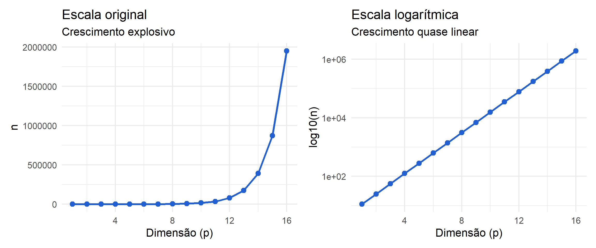
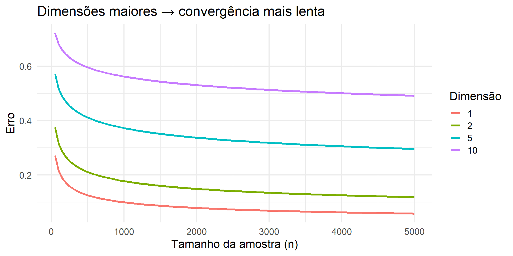

Parte I : Aprendizado Supervisionado
Aprendizado em Alta Dimensão
Onde estamos?
Nas semanas anteriores, construímos estimadores flexíveis para
\[ r(\mathbf x)=E[Y\mid \mathbf X=\mathbf x] \]
utilizando:
- funções de base
- vizinhanças
- partições
- ensembles
- composições não lineares
Métodos Não Paramétricos em Altas Dimensões
- Métodos não paramétricos são mais flexíveis
- Porém:
- exigem mais dados
- sofrem em altas dimensões
Agora surge uma nova pergunta:
Como a dimensão afeta o desempenho dos modelos?
O Problema da Dimensão
Suponha:
- \(X = (X_1, X_2, ..., X_p)\)
À medida que \(p\) cresce:
- o espaço de entrada cresce exponencialmente
- os dados ficam “espalhados”
➡️ Dificuldade de aprendizado aumenta
Maldição da Dimensionalidade
(Bellman, 1966)
Problema:
- Volume do espaço cresce exponencialmente
- Dados se tornam escassos
Consequência:
➡️ Precisamos de MUITO mais dados

Note que,
🔵 1D
Alta densidade
- muitos pontos locais
- vizinhos próximos
🟣 2D
Densidade reduz
- menos pontos por região
- distância começa a importar
🔴 Alta dimensão
Espaço explode
- dados esparsos
- vizinhos distantes
- KNN perde eficiência
Mensagem central
Em altas dimensões, a proximidade deixa de ser informativa e métodos baseados em vizinhança perdem desempenho.
Consequência da alta dimensionalidade
⚠️ Problema
- Estimar uma função de regressão em alta dimensão é muito difícil
- O erro não diminui facilmente, mesmo com mais dados
Sem hipóteses adicionais, não é possível obter boas estimativas com tamanhos de amostra realistas.
\[ \text{Erro} \sim n^{-\frac{\alpha}{\alpha + p}} \Rightarrow n \sim \left(\frac{1}{\delta}\right)^{\frac{\alpha + p}{\alpha}} \] \[\delta: \text{erro máximo desejável}\]
Crescimento do tamanho da amostra com a dimensão
Impacto da dimensionalidade
Por exemplo, qual o impacto de se dobrar a dimensionalidade dos dados de \(p=4\) para \(p=8\)?
Temos que
\[\small n(p) \sim \left(\frac{1}{\delta}\right)^{\frac{\alpha + p}{\alpha}}\] Se \(\delta = 0,2\) e \(\alpha = 2\):
\[\small \frac{n(8)}{n(4)} = \left(\frac{1}{0,2}\right)^{2} = 25 \]
Dobrar a dimensão (de 4 para 8) pode exigir 25 vezes mais dados.

🔑 Como resolver?
Precisamos assumir duas suposições nos dados:
-
Esparsidade → poucas variáveis realmente importam
-
Redundância → variáveis carregam informação semelhante
O problema não é só o modelo…
➡️ é a dimensionalidade efetiva dos dados
Esparsidade
📐 Modelo depende de apenas alguns \(x_i's\)
\[ r(x) = r\big((x_i)_{i \in S}\big) \]
em que \(S \subset \{1, \cdots, p\}\).
🔴 Alta dimensão aparente
-
\(p = 1000\) variáveis
- difícil de estimar
🟢 Dimensão efetiva
-
\(|S| = 5\) variáveis relevantes
- problema tratável
Quando existe esparsidade, o número de variáveis relevantes pode ser muito menor que \(p\).
Como aplicar a suposição de esparsidade?
🎯 Ideia central
Poucas variáveis realmente importam
🔧 Estratégias
seleção de variáveis: testes estatísticos, stepwise selection, importância de variáveis (Random Forest)
regularização (Lasso): força vários coeficientes a zero, seleciona automaticamente variáveis
entre outras…
Alta dimensão aparente → baixa dimensão efetiva
Redundância
📊 Intuição
-
\(X_1 = \cdots = X_p\) → informação totalmente redundante
- variáveis altamente correlacionadas → informação parcialmente redundante
🔴 Alta dimensão aparente
-
\(p = 100\) variáveis
- parecem independentes
🟢 Dimensão intrínseca
- dados vivem em espaço de baixa dimensão
- estrutura escondida
\[ \mathbf{x} \in \mathbb{R}^p \quad \text{mas vive em um espaço de dimensão menor} \]
Como aplicar a suposição de redundância?
🎯 Ideia central
Variáveis carregam informação repetida
🔧 Estratégias
- análise de correlação
- PCA: captura redundância linear
-
UMAP / t-SNE: capturam redundância não linear: preservam estrutura local, revelam padrões escondidos
-
Autoencoders: aprendem uma representação de baixa dimensão dos dados, através de redes neurais
Alta dimensão observada → baixa dimensão intrínseca
KNN e Regressão Linear Local em Alta Dimensão
💡 Ideia chave
- Dados podem viver em uma dimensão intrínseca baixa
- Mesmo que o espaço seja de alta dimensão \(p\)
🔍 O que isso implica?
👉 Métodos baseados em vizinhança:
- KNN
- Regressão linear local
✔ se adaptam automaticamente à estrutura dos dados
⚡ Resultado importante
A taxa de convergência de ambos é igual a
\[ \text{Erro} \sim n^{-\frac{4}{4+u}} \]
e depende de:
-
\(u\) = dimensão intrínseca
- não de \(p\) = dimensão observada
Se \(u \ll d\), podemos escapar da maldição da dimensionalidade
A estrutura dos dados é mais importante que o número de variáveis
Métodos já estudados em alta dimensão
KNN e métodos locais
\[ p\uparrow\Rightarrow\text{dados localmente mais esparsos} \]
Regularização e esparsidade
Lasso pode explorar estrutura esparsa quando poucas covariáveis são relevantes
Random Forest
Pode ser relativamente robusta quando variáveis informativas são identificáveis, mas muitas variáveis irrelevantes ainda podem degradar o desempenho
Três quantidades diferentes
\[ \boxed{p=\text{dimensão observada}} \] \[ \boxed{s=\text{número de variáveis relevantes}} \] \[ \boxed{u=\text{dimensão intrínseca}} \]